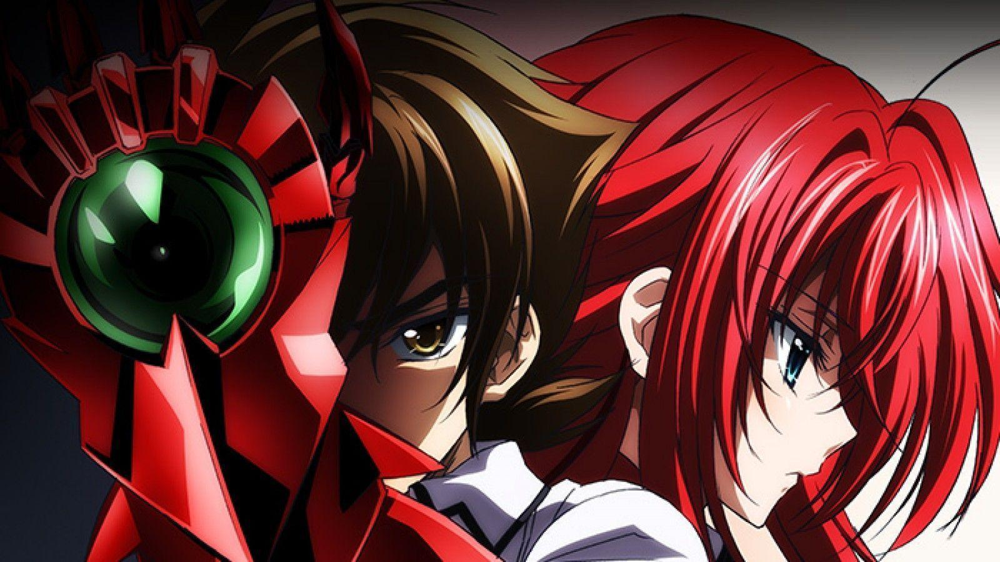
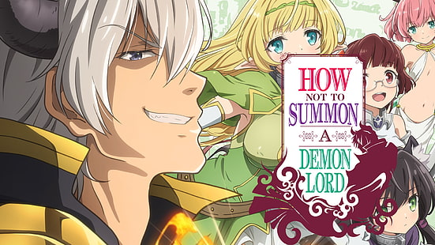
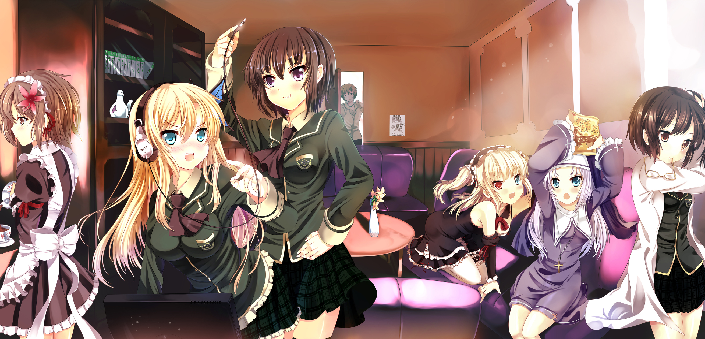

After being killed on his first date, idiotic and perverted Issei Hyodo is resurrected as a demon by Rias Gremory only to be recruited into her club of high-class devils. The story follows Issei Hyodo, a dim-witted, lecherous second-year high school student who is killed by a girl on his first date ever.
Takuma Sakamoto is a hikikomori gamer who is mysteriously transported to the virtual world of his favourite MMORPG, Cross Reverie, with the appearance of his own character in the game, the Demon Lord Diablo.
Kodaka Hasegawa, a transfer student to St. Chronica's Academy, has found it difficult to make friends because of his mix of brown-blond hair (inherited from his deceased English mother) and fierce-looking eyes that make him look like a delinquent.
